Case study product/purple-pen · The Purple Pen · 2020
Empowering teachers and students
I helped The Purple Pen flesh out a system that gives teachers and students a tool to create personal lessons based on authentic learning principles — from a year of spreadsheets and sketches to a high-fidelity prototype they could demo end to end.
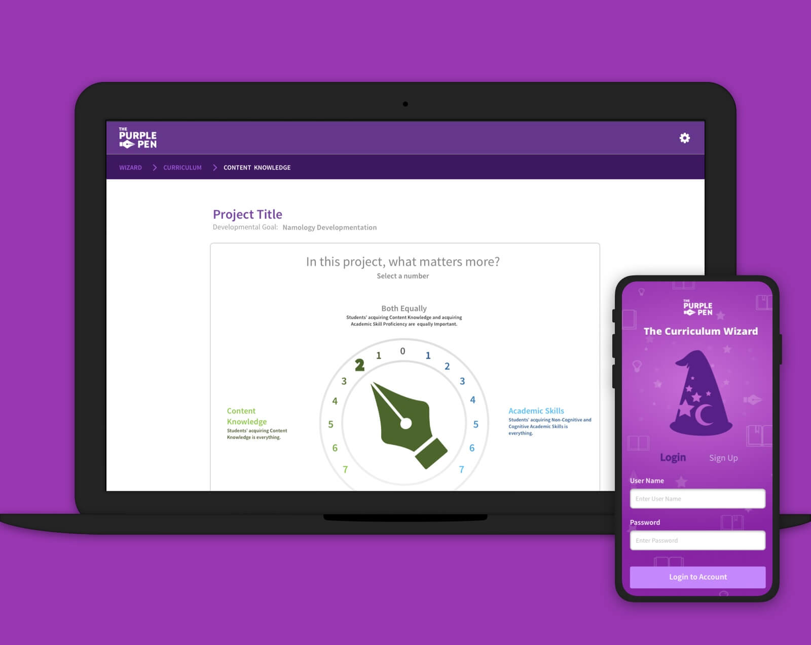
The Purple Pen
A call from my high school teacher
This project started when my high school teacher contacted me to ask a couple of questions about my profession. It turned out he had a project that needed a lot of design work — and it couldn't have been one I believed in more. I'm a product of the Chicago Public Schools system myself, but nobody knew it better than Barry, who had taught in some of the best and worst schools across Chicago.
Barry and a group of supporters wanted to change the way children are taught by giving parents and teachers the ability to create their own lesson plans and learning criteria: aligned to the Common Core State Standards, but tailored to the needs of an individual learner. The guiding principle was to find the optimal education experience by balancing authentic learning with common standards and assessments.
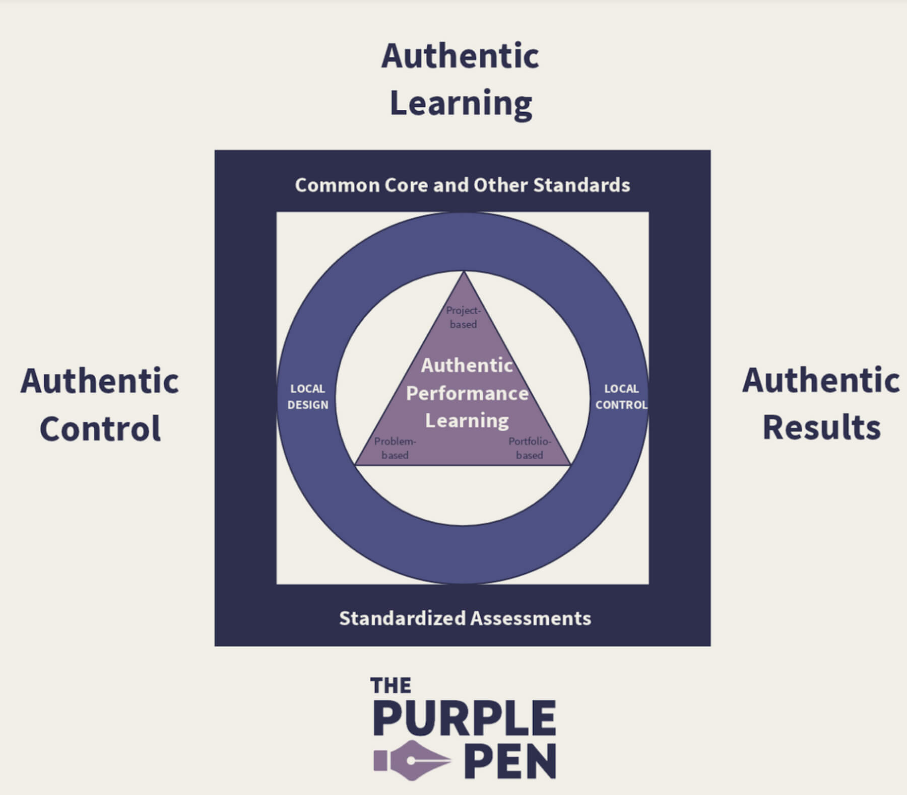
The kickoff
The Purple Pen group had been working on the product for over a year, developing their own assets and methods of documentation. There were even some fully articulated interface designs for a few of the application's key dashboards and page views. I began by talking with Barry about the problem they faced, the methods educators used today, and what the ideal process for an educator would look like. To help them, I realized I needed a higher-level view of the whole process before I could get a real grasp of the product.
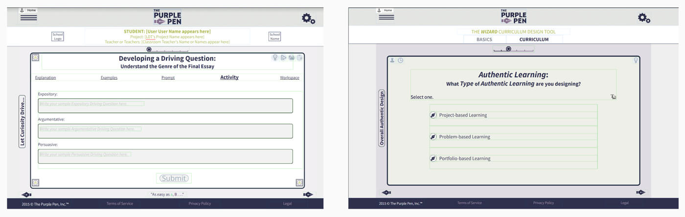
A year of thinking had gone into the product before a designer touched it. The first job wasn't to design anything. It was to understand it.
Getting caught up
The whole flow lived in spreadsheets
The only place the entire flow had been documented was a series of Excel sheets and text documents. Reading through them, and mapping them back to the screens that already existed, was how I built the high-level view I needed.
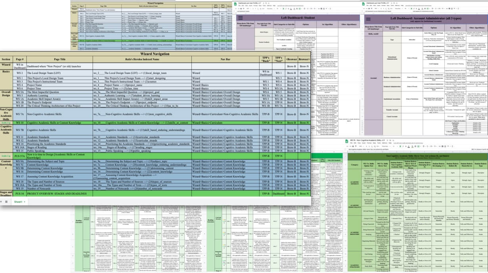
Splitting priorities
Three flows that held the whole product
After multiple rounds of feedback we were able to agree on three product flows that together encapsulated the entire product the team envisioned. Splitting the work that way gave every conversation a home and kept the wizard — by far the most complex piece — from swallowing everything else.
-
01
Educator
The teacher's side: setting up a project, its design team, and building the curriculum through the wizard.
-
02
Learner
The student's side: working through the activities a teacher has designed for them.
-
03
Admin
Accounts, roles and institutions: who can see and manage what across a school.
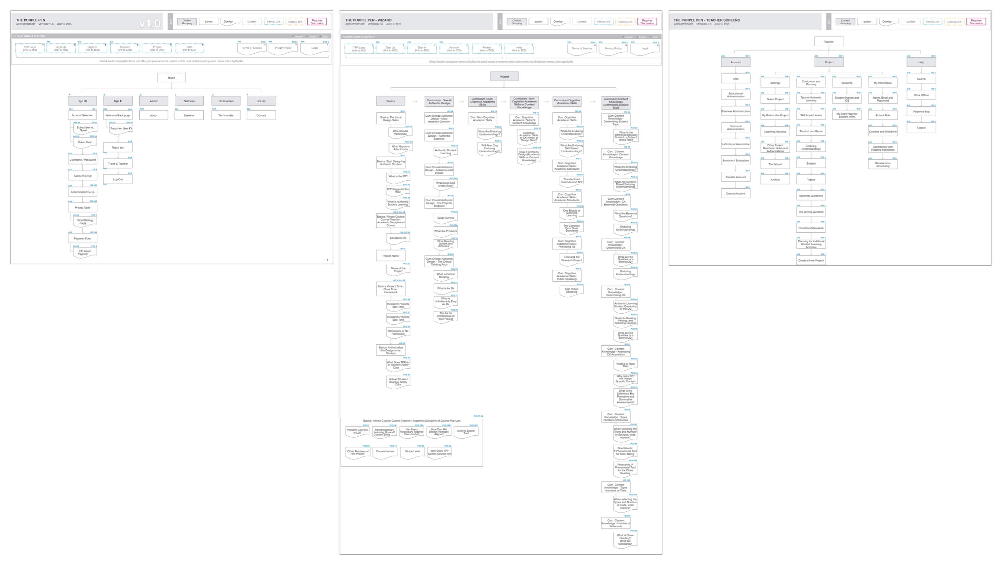
The wizard
A pattern library first, then every screen
A lot of the project's complexity was contained in the curriculum wizard: a long series of selections and options to customize your result. The Purple Pen team was ready to start building the product, so to give the initial screens some guidance I created a style guide and pattern library we could all reference and eventually add to.
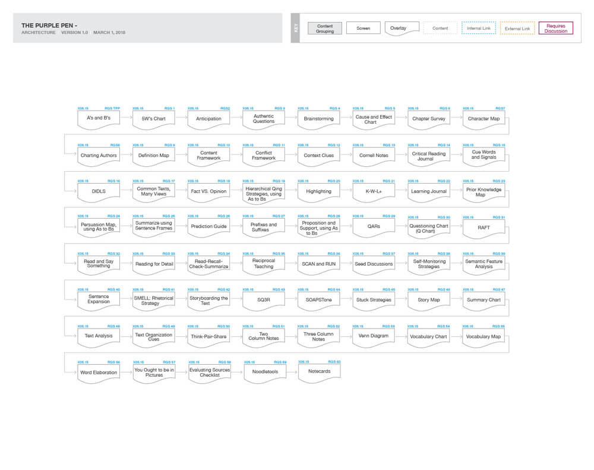
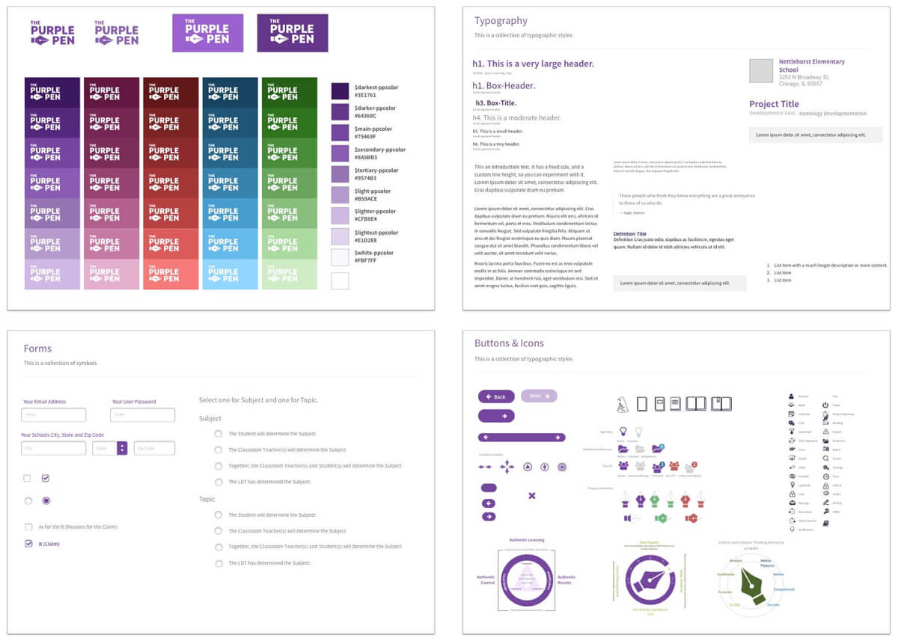
With the pattern library in place I was able to quickly redesign every screen they had originally created and begin working on new functionality. With the whole flow in high fidelity and ready for a prototype, I could start focusing on the complexity inside each step of the process.
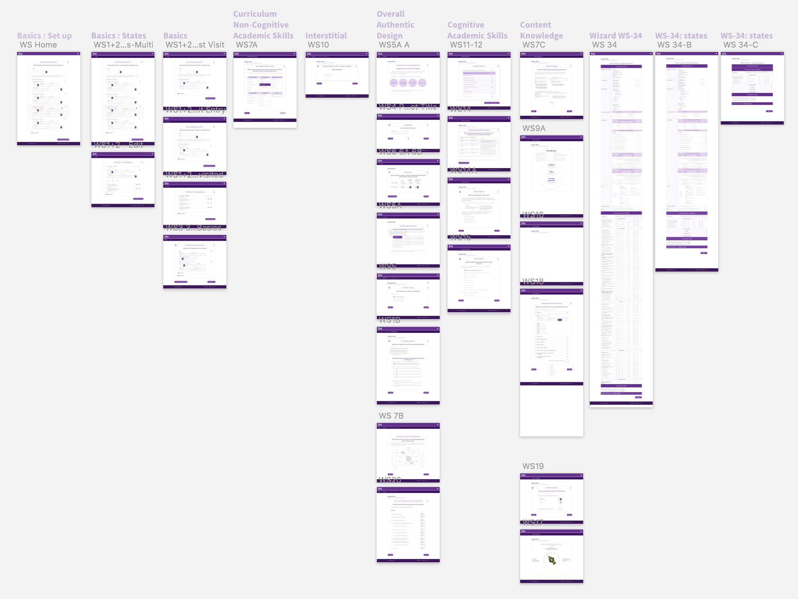
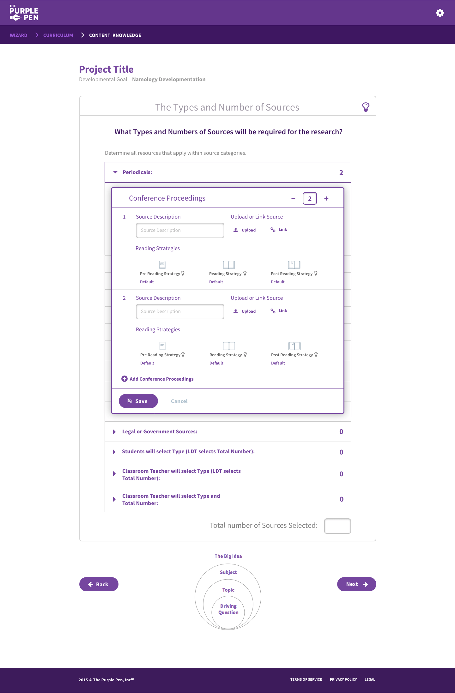
Constant feedback loop
Prototype, share, test, adjust
As soon as I developed a new flow or a complex selection sequence, I shared the prototype on InVision so the whole team could test and approve the functionality.
The prototypes let us quickly test different controls and patterns against the same problem. I could diagnose issues before they happened, and make adjustments based on scenarios I hadn't addressed or planned for.
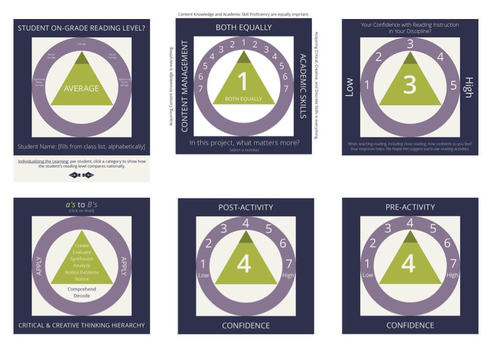
Opportune branding
The logo was every control
When I first began working with The Purple Pen I was told repeatedly how important the brand was, and how important it was that users were well aware of it. Early on, that had led the team to make every single control the logo symbol. Checkboxes, radios, even arrows: the logo was being heavily overused.
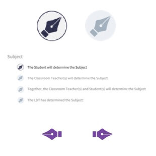
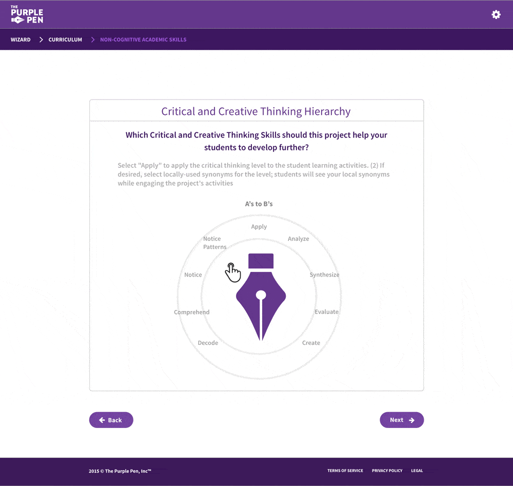
After some initial pushback from the advisory group, I was able to convince them there were better opportunities to use the logo, and that for accessibility's sake we should stick to standard controls. And thankfully I found the perfect opportunity to use the branding: a few selection controls used throughout the process to set a value.
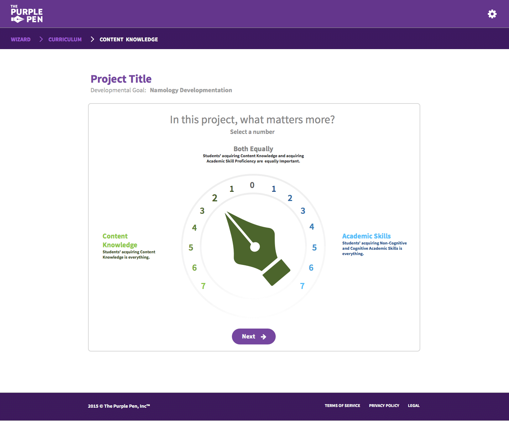
Outcome
An application they could demo end to end
I helped The Purple Pen deliver an application they could fully demo and present — one that completely shows the new tool's ability to complete an entire lesson plan. The Purple Pen recently won an award for innovation from Reimagine Education, and is currently looking for investors.
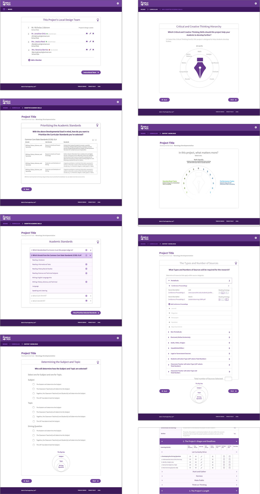
A project I believed in from the first phone call. The best part was watching a year of spreadsheets become something a teacher could pick up and use.